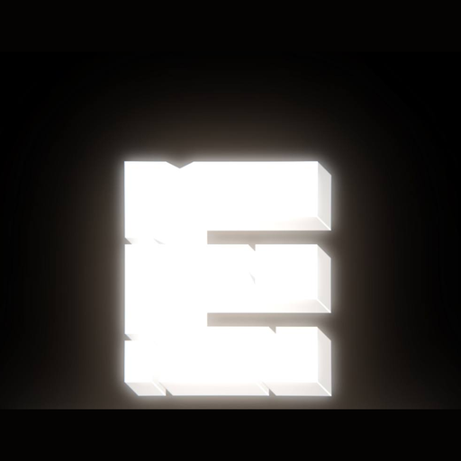

Следите за новостями, роликами и жизнью проекта в удобном для вас формате.
Приглашение в Discord доступно участникам нашего Telegram-канала.
Быстрые новости, анонсы техработ и обсуждения без лишнего шума.
Короткие клипы с ивентов, забавные моменты и превью обновлений.
Канала пока нет — запустим, как только накопится, что показать.